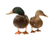

Animal Grimoire

DucksDucks belong to the family Anatidae and are found on every continent except Antarctica, inhabiting waterways, wetlands, marshes, wooded areas, parks, and cultivated landscapes depending on the species. Among the most widely encountered wild ducks in North America, the mallard measures approximately 23 inches in length with an average weight of 2.5 pounds, while the wood duck measures about 20 inches and weighs just over a pound. Identifying features include webbed feet, round heads, rounded and somewhat flat bills, and short tails. Their legs are set far back on the body, creating a characteristic waddle on land, while in water they move with remarkable smoothness and power. Plumage ranges from dappled brown to vivid patches of colour on the wings, breast, or head.
Interesting Facts
Ducks are primarily water-based birds capable of thriving in both saltwater and freshwater environments. The word "duck" itself means to stoop or bend down, a reference to dabbling, the behaviour of dipping the head underwater to feed. Most ducks in northern regions migrate to warmer climates for winter, though those in temperate zones may remain year-round. Ducks are considered game birds in many areas and, like chickens, have long been domesticated for their meat and eggs. Domesticated ducks require access to water to survive, and when eggs hatch, the mother leads her ducklings immediately to the nearest body of water. Eider ducks are bred specifically for their soft down, lending their name to the eiderdown, a term for a feather-filled quilt.
Mythology and Folklore
In both China and Japan, a pair of Mandarin ducks symbolises wedded fidelity and happiness, as Mandarins are among the few duck species that mate for life. The Mandarin duck may also be worked with as a symbol when addressing difficult or strained relationships.
A statue found in northern France depicts the Celtic goddess Sequana standing in a duck-shaped boat, connecting the duck to the ability to navigate waterways and to associations with fertility and feminine virtues. In Egyptian hieroglyphs, the duck symbol represents "son," and the flying duck hieroglyph literally translates to "to fly."
To hear a duck quacking is considered a good omen, particularly regarding prosperity. To see one take flight is equally auspicious, offering hope and the promise of rising above current difficulties.
Omens and Divinatory Meaning
A duck sighting may serve as a literal or figurative prompt to keep your head down and stay out of the way for a time. Something may be approaching that could ruffle your feathers or disturb your usual smooth sailing. Alternatively, the duck may invite reflection on responsibility: are you attempting to avoid something? If navigating a complicated situation, are you certain you have all your ducks in a row?
The duck's physical form and webbed feet allow it to remain afloat and move through water with ease. Its energy may help you stay buoyant and go with the flow when rough waters arise. Call on its natural buoyancy to bob atop turbulence and weather any storm with quiet grace.
Colors
Green, brown, white, black, grey
The Devil, the Sun, and the Soul
One of the duck's stranger associations is with the Devil, conferred by the thirteenth-century pope Gregory IX, who preached a fervent sermon naming the bird as the personification of the demon Asmodeus, said to appear to his followers in the guise of a duck. Such demonic links are an aberration, for the duck is in general a benevolent ally. As a migratory bird its comings and goings marked the turning of the seasons, so it was credited with prophecy: the timing of its laying and hatching foretold the season's progress, and a louder quacking than usual was taken to presage storms.
Being a water bird, the duck was linked to Poseidon and Neptune, and in Egypt, where it was domesticated five thousand years ago, it was associated with Isis and the Sun God Ra. Its takeoff, skimming across the water and rising into the air, trades one element for another and so came to picture the journey of the soul into the next world. For the Celts, as in Egypt, the duck was a symbol of the Sun, shown in old finds alongside the solar wheel, a meaning owed in part to the iridescent, rainbow-like shimmer of its feathers, which the Pueblo peoples prize as sacred and decorative. In the Far East the duck stands for happiness and longevity, and so adorns wedding stationery.